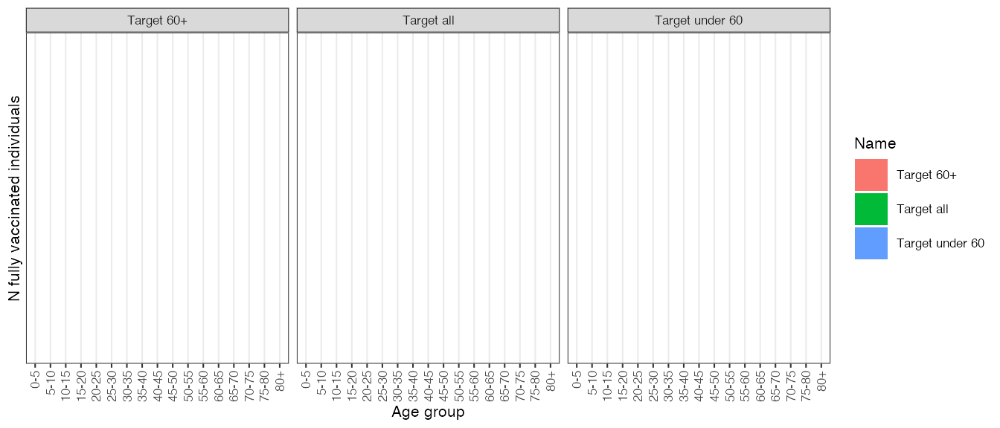

Target.RmdAvailable vaccines can be targeted to any combination of the 17 5-year age groups.
# Run the determinstic model with an example population and no age-targeted vaccination target_all <- run( population = squire::get_population(country = "United Kingdom")$n, contact_matrix_set = squire::get_mixing_matrix(country = "United Kingdom"), max_vaccine = 10000, dur_V = 5000, vaccine_efficacy_disease = rep(0, 17), vaccine_efficacy_infection = rep(0.9, 17), vaccination_target = rep(1, 17) ) # Format the output selecting vaccines and deaths (note these are output per timestep) # We also keep age straification here out1age <- format(target_all, reduce_age = FALSE, compartments = NULL, summaries = c("deaths", "vaccines")) %>% mutate(Name = "Target all")
# Run the determinstic model with an example population and vaccination targeted at 60+ target_older <- run( population = squire::get_population(country = "United Kingdom")$n, contact_matrix_set = squire::get_mixing_matrix(country = "United Kingdom"), max_vaccine = 10000, dur_V = 5000, vaccine_efficacy_disease = rep(0, 17), vaccine_efficacy_infection = rep(0.9, 17), vaccination_target = c(rep(0, 12), rep(1, 5)) ) # Format the output selecting vaccines and deaths (note these are output per timestep) # We also keep age straification here out2age <- format(target_older, reduce_age = FALSE, compartments = NULL, summaries = c("deaths", "vaccines")) %>% mutate(Name = "Target 60+")
# Run the determinstic model with an example population and vaccination targeted at under 60 target_younger <- run( population = squire::get_population(country = "United Kingdom")$n, contact_matrix_set = squire::get_mixing_matrix(country = "United Kingdom"), max_vaccine = 10000, dur_V = 5000, vaccine_efficacy_disease = rep(0, 17), vaccine_efficacy_infection = rep(0.9, 17), vaccination_target = c(rep(1, 12), rep(0, 5)) ) # Format the output selecting vaccines and deaths (note these are output per timestep) # We also keep age straification here out3age <- format(target_younger, reduce_age = FALSE, compartments = NULL, summaries = c("deaths", "vaccines")) %>% mutate(Name = "Target under 60")
# Create plot data.frame pd <- bind_rows(out1age, out2age, out3age) pdage <- pd %>% filter(compartment == "vaccines") %>% group_by(age_group, Name) %>% summarise(value = sum(value)) #> `summarise()` regrouping output by 'age_group' (override with `.groups` argument) # Plot outputs ggplot(pdage, aes(x = age_group, y = value, fill = Name)) + geom_bar(stat = "identity", position = "dodge") + facet_wrap( ~ Name) + ylab("N fully vaccinated individuals") + xlab("Age group") + theme_bw(base_size = 8) + theme(axis.text.x = element_text(angle = 90, vjust = 0.5, hjust = 1)) #> Warning: Removed 51 rows containing missing values (geom_bar).
